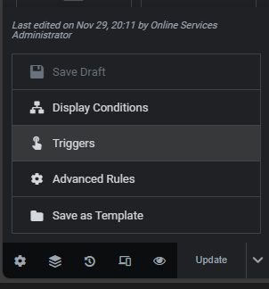
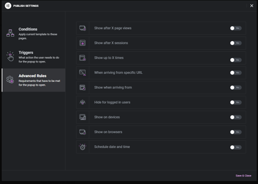

Christmas Updates
Editing the Christmas Page
Go to https://www.keresley.church/wp-admin/edit.php?post_type=page and under “Christmas” select Edit with Elementor
In the Elementor page editor, click on last years poster and the sidebar of the left will update.

Click on the image preview and upload the new poster and select that. Once you have done that the image has been updated so you can click on Publish on the sidebar.
Editing the Popup
Go to https://www.keresley.church/wp-admin/edit.php?post_type=elementor_library&tabs_group=popup&elementor_library_type=popup
Under “Advent” click on Edit with Elementor
In the Elementor page editor, click on last years poster and the sidebar of the left will update.
Click on the image preview and upload the new poster and select that. Once you have done that the image has been updated so you can click on Update on the sidebar. Next to update click on the up arrow and then Triggers

Turn page load on or off then click save and close.

In advanced rules, you can set it to auto turn on and off, the option is under schedule date and time.
